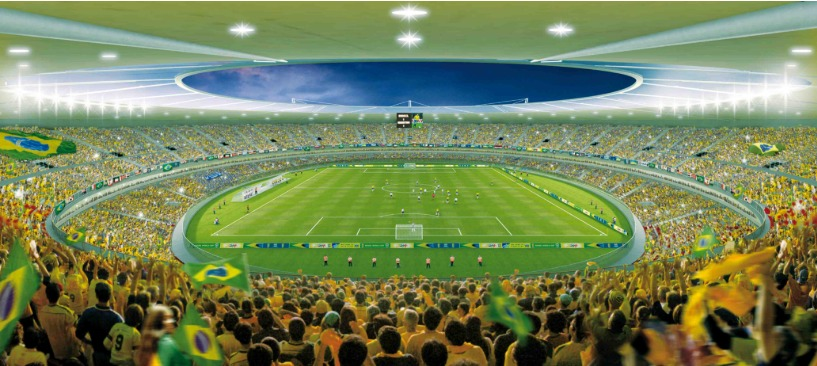
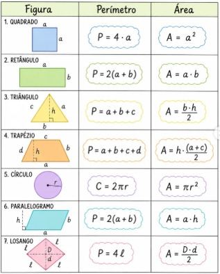
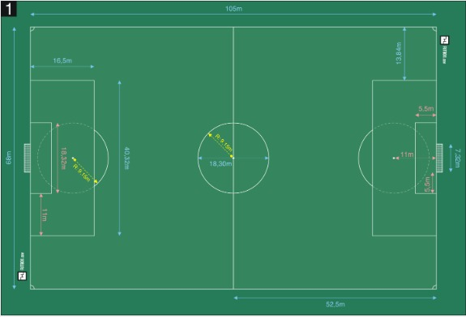

🎯 Objetivos do Projeto
- Compreender o conceito de escala
- Transformar medidas reais em medidas reduzidas
- Calcular área e perímetro de figuras planas
- Identificar figuras geométricas no campo
1) Campo Real - Medidas Oficiais FIFA

Medidas padrão FIFA usadas na Copa 2014 e 2026 | 105m x 68m
Medidas Principais:
Comprimento: 105 m = 10500 cm
Largura: 68 m = 6800 cm
Área: 105 x 68 = 7140 m²
Perímetro: 2 x (105 + 68) = 346 m
Círculo Central: Raio = 9,15 m | Diâmetro = 18,30 m
Área do Gol: 5,5 m x 18,32 m
Área do Pênalti: 16,5 m x 40,32 m
2) Tabela de Escalas da Maquete
Obs: As medidas servem para qualquer estádio da Copa, pois o campo tem tamanho padrão.
| Escala | Comprimento | Largura | Área | Perímetro |
|---|---|---|---|---|
| 1:50 | 210 cm | 136 cm | 28.560 cm² | 692 cm |
| 1:100 | 105 cm | 68 cm | 7.140 cm² | 346 cm |
| 1:200 | 52,5 cm | 34 cm | 1.785 cm² | 173 cm |
3) Figuras Geométricas e Fórmulas - Tabela Oficial
Use esta tabela para calcular as medidas da maquete. Veja onde cada figura aparece no campo:

Onde usar no Campo de Futebol:
- Retângulo: Campo todo 105m x 68m | Área do Pênalti 16,5m x 40,32m
- Quadrado: Pequena área 5,5m x 5,5m
- Círculo: Círculo Central r = 9,15m | Área = π x 9,15²
- Triângulo: Bandeirinhas de escanteio
- Trapézio: Arquibancadas da maquete
- Linha/Segmento: Linhas laterais = 105m | Linha de fundo = 68m
4) Nossa Maquete - Sala 801

Maquete construída pelos alunos do 8º Ano - Escala 1:100
Materiais utilizados: Papelão, grama sintética, tinta, palitos
Medidas da nossa maquete: 105 cm x 68 cm
Participantes: Turma 801
5) Comparando as Copas: 2014 vs 2026
| Item | Copa 2014 - Brasil | Copa 2026 - EUA/México/Canadá |
|---|---|---|
| Estádio Exemplo | Mineirão - BH | MetLife - Nova York |
| Medida do Campo | 105m x 68m | 105m x 68m |
| Nº de Seleções | 32 seleções | 48 seleções |
| Países Sede | 1 país | 3 países |
6) Desafio Matemático - Sala 801
- Qual será o tamanho final da maquete na escala escolhida?
- Qual será a área e o perímetro do campo na maquete?
- Qual escala permite economizar mais material? Por quê?
- Calcule a área do círculo central na escala 1:100